这篇 ICML 2026 论文《Can Recommender Systems Teach Themselves? A Recursive Self-Improving Framework with Fidelity Control》来自中国科学技术大学，一作 Luankang Zhang，合作机构包括华为；论文入口是 arXiv:2602.15659。论文提出 Recursive Self-Improving Recommendation，简称 RSIR，尝试让推荐模型在不依赖外部 teacher、不引入额外数据源的情况下，用自身已学到的偏好结构生成高保真合成序列，再训练后继模型。作者公开了 RSIR 代码仓库，本笔记重点读它的闭环生成、fidelity control、隐式正则解释、递归误差界以及实验中“自我生成数据是否会污染模型”的证据。
1. 背景和问题
推荐系统长期被一个基础矛盾限制：平台物品库很大，用户实际交互极少。一个用户可能只点击或购买过极少数物品，序列模型却要从这些稀疏片段中推断偏好、兴趣转移、短期意图和候选物品之间的隐含关系。论文把这个问题描述为训练数据质量和数量的双重瓶颈：数据少会让优化景观变得崎岖，模型容易落入尖锐、脆弱的局部最优；数据噪声又会让模型学到偶然点击、曝光偏差和热门物品偏置。对序列推荐来说，这不是一个简单“加大模型就能解决”的问题，因为模型越大，越可能把稀疏日志里的偶然模式记得更牢。
已有路线大致有三类。第一类是手工或启发式数据增强，例如重排、裁剪、插入、mask 用户序列中的 item。这类方法便宜，但通常只是在已有序列上做扰动，不能真正产生新的高保真交互轨迹。第二类是可学习数据生成，例如 ASReP、DiffuASR、DR4SR 等方法，它们用额外生成器或扩散模型生成序列，能够增加数据量，但训练和生成成本较高，也可能引入与目标推荐模型不一致的分布。第三类是外部知识或外部 teacher，例如用 LLM、内容描述、结构化 semantic ID 或 reviews 补足 item 语义；这类方法有价值，但依赖外部资源和跨域对齐，一旦 teacher 的行为分布与真实用户不同，就会把推荐系统推向另一个偏差源。
RSIR 的问题意识更激进：如果一个推荐模型已经从稀疏日志中学到了一部分用户偏好结构，它能不能利用这部分结构自己探索、自己生成训练数据、再训练下一个更强模型？这个想法听起来像 LLM 自我改进或 diffusion 模型的 recursive self-training，但推荐系统有一个更危险的闭环反馈：模型生成的数据会被后继模型当成真实训练信号，一旦错误样本进入数据集，偏差会被递归放大，形成 self-consuming loop。论文因此没有把“生成更多数据”当作贡献，而是把关键放在“生成数据必须被 fidelity control 约束”上。
这里的 fidelity 不是普通语义相似度，而是“合成序列是否仍然能让模型预测到用户真实历史中剩余的目标 item”。换句话说，模型可以在用户历史和全局 item set 之间做有界探索，但每一步合成 item 都要接受一个近似偏好流形检查：把它临时加入上下文以后，模型是否仍能把用户真实后续交互中的至少一个 item 排在足够靠前的位置。如果能，说明这个合成轨迹没有明显偏离用户偏好；如果不能，生成立即停止。这一设计把自我生成从“模型随便采样新 item”变成“模型在真实偏好轨迹附近做局部扰动”。
论文真正要回答的是三层问题。第一，单轮 RSIR 是否能在不同 backbone 上稳定带来收益，还是只对某个模型有效。第二，多轮递归是否会继续提升，还是很快污染数据、导致坍塌。第三，弱模型生成的数据是否可能帮助强模型，换言之，自我改进是否只属于大模型的“涌现能力”，还是一种更一般的数据正则机制。为了回答这些问题，论文没有只给一个最终分数，而是把主结果、多轮曲线、fidelity ablation、弱到强迁移、生成数据密度、近似熵、运行效率和噪声鲁棒性串成了一条证据链。
从工程角度看，RSIR 值得读的地方在于它把推荐系统里的数据闭环显式建模了。真实平台每天都会发生模型影响曝光、曝光影响日志、日志再训练模型的反馈，但多数离线训练把日志当成外生数据。RSIR 把这个闭环收进训练流程：当前模型是数据生成器，fidelity control 是安全阀，后继模型是对扩展数据分布的响应。即使最终不采用完整 RSIR，这种“先问生成数据是否仍然能预测真实后续行为”的验证思想，也可以迁移到冷启动模拟、反事实样本、用户序列修补和离线数据清洗中。
还有一个容易被忽略的背景是，推荐系统里的“新数据”并不天然等于“好数据”。平台可以通过重采样、重排、热门补齐或内容侧扩写快速制造更多训练样本，但这些样本如果没有保留用户偏好约束，通常只会让模型更确信已有偏差。RSIR 的价值在于把数据增广问题改写成一个可检验的因果顺序：先用当前模型提出一个局部假设，再用真实后续行为检查这个假设是否仍能解释用户轨迹，最后才允许它进入训练集。这种顺序让它比普通 augmentation 更接近“受控反事实”，也让后续实验中的 fidelity ablation 成为论文最关键的证据之一。
因此，本文不是在回答“推荐系统能不能编造训练样本”，而是在回答“推荐系统能否在可验证的偏好邻域内提出新训练信号”。这一区别决定了后文所有方法和实验的评价口径。
2. 方法
2.1 递归闭环：把推荐模型从训练对象变成数据生成器
RSIR 从一个普通序列推荐训练集开始。设初始数据为 $D_0=\{s_u\}_{u\in U}$，其中 $s_u=(i_1,\ldots,i_T)$ 是用户 $u$ 的按时间排序交互序列，物品全集为 $I$。常规训练只会在 $D_0$ 上学习一个模型 $f_{\theta_0}$，然后用它预测下一物品。RSIR 改成递归过程：第 $k$ 轮先在当前数据 $D_k$ 上训练模型 $f_{\theta_k}$，再用这个模型为每条用户序列生成合成轨迹 $D'_{k+1}$，通过 fidelity control 过滤后形成扩展数据 $D_{k+1}=D_k\cup D'_{k+1}$，最后训练下一代模型 $f_{\theta_{k+1}}$。
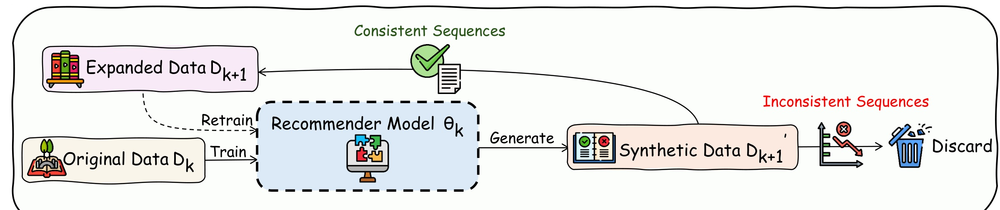
图 1 是整篇论文最重要的结构图。左侧是已有数据 $D_k$ 和原始用户日志，中间的 recommender model $\theta_k$ 被训练后反过来作为 generator，右侧合成出 $D'_{k+1}$。关键不在“Generate”箭头，而在生成后被分成 consistent sequences 和 inconsistent sequences：前者被加入 expanded data，后者被丢弃。这个图把 RSIR 与普通自训练区分开了。普通自训练往往只看模型置信度，容易把错误伪标签放大；RSIR 要求合成序列经过真实剩余交互的间接校验，只有仍然能支持真实用户后续行为预测的轨迹才进入下一轮。
论文把这个递归过程写成：
符号解释：$\theta_k$ 是第 $k$ 轮模型参数，$D'_{k+1}$ 是由当前模型生成并通过质量控制的合成序列集合，$D_{k+1}$ 是原始数据和新序列合并后的训练集，$\theta_{k+1}$ 是下一轮模型。这个公式很短，但它隐含了一个训练分布变化：模型不是在固定数据上反复 finetune，而是在逐轮变密、逐轮扩展的用户轨迹空间上重新学习。论文同时比较了 RSIR-FT 和 RSIR 两种版本，前者从已有模型 fine-tune，后者从新随机初始化 retrain；主结果中二者都有效，说明收益不是简单来自继续训练更多 epoch。
2.2 有界探索候选池：在用户历史和全局物品之间取样
如果直接让模型从全量 item vocabulary 里自回归采样，合成轨迹很快会漂移。推荐模型并不是通用世界模型，它只在稀疏点击日志上学到局部偏好结构；随意采样会产生看似新颖但和用户真实兴趣无关的 item。RSIR 因此先限制候选池。对每条真实用户序列 $s_u$，生成过程会随机选取一个真实历史前缀作为当前上下文 $S_{ctx}=(i_1,\ldots,i_j)$，然后每一步构造混合候选池：
符号解释：$C_t$ 是第 $t$ 步生成时的候选池，$s_u$ 是该用户的真实历史序列，$I$ 是全局物品集合，$p$ 是 exploitation probability。以概率 $p$，候选从用户真实历史中采样；以概率 $1-p$，候选从全局物品集合中采样。模型 $f_{\theta_k}$ 只在这个候选池内做 top-$k$ 采样并生成下一个 item。这样设计的目的，是让合成序列既能利用用户已有偏好，又不完全局限于旧 item 的重排。
这一步有两个直觉。第一，来自 $s_u$ 的采样让模型做 exploitation：用户已经交互过这些 item，说明它们属于该用户的偏好邻域，重新组合或延展这些 item 可以发现更高阶的顺序模式。第二，来自 $I$ 的采样让模型做 exploration：只在历史中采样会把模型锁死在旧序列，无法发现新兴趣或相邻偏好区域。$p$ 因此不是一个普通超参，而是控制“已知偏好内重组”和“偏好边界外探索”的阀门。
论文后续实验显示，$p$ 不是越大越好，也不是越小越好。$p=1$ 时几乎只在用户历史里重组，数据新颖性不足；$p=0$ 时过度依赖全局物品，生成候选容易偏离用户偏好，需要被 fidelity control 大量过滤。Amazon-Sport 上的敏感性曲线在 $p\approx0.5$ 附近较好，说明推荐系统的自生成数据最有价值的区域不是纯复制历史，也不是纯随机探索，而是围绕已知兴趣做适度外推。
2.3 Fidelity control：用剩余真实目标约束合成轨迹
候选池只是第一层约束，更关键的是 fidelity-based quality control。RSIR 在每步生成 item $i_{gen,t}$ 后，不是马上把它写入合成序列，而是先构造临时上下文 $S'_{ctx}=S_{ctx}\cup\{i_{gen,t}\}$。然后定义 $S_{tgt}=s_u\setminus S'_{ctx}$，即真实用户序列中尚未被上下文覆盖的剩余 item。只有当临时上下文仍能让模型把某个真实剩余 item 排到阈值 $\tau$ 以内时，这一步才被接受：
符号解释：$i_j$ 是真实历史中尚未使用的目标 item，$S'_{ctx}$ 是加入合成 item 后的临时上下文，$\mathrm{Rank}_{f_{\theta_k}}(i_j\mid S'_{ctx})$ 是模型在该上下文下给真实目标 item 的预测排名，$\tau$ 是 rank threshold。若存在至少一个真实目标仍排在 $\tau$ 以内，说明合成 item 没有破坏对真实后续行为的预测；若不存在，说明合成轨迹开始偏离用户偏好流形，当前 generation trial 立即 break。
这个检查很巧妙，因为它没有要求合成 item 本身一定出现在真实历史中。模型可以生成新 item，也可以改变局部顺序，但生成后的上下文必须仍然能解释真实未来。这比“生成 item 与历史 item 相似”更严格，也比“模型对生成 item 置信度高”更贴近推荐任务目标。它相当于问：这一步合成是否仍然是用户偏好轨迹附近的一个可接受扰动？如果答案是否定的，继续往下采样只会把错误上下文越滚越远，因此立刻终止比事后整条序列评分更安全。
算法伪代码还有几个实现细节。每条用户序列可以生成 $m$ 条 synthetic sequences，每条 trial 从短上下文开始逐步扩展；生成过程中会维护 $S_{ctx}$ 和 $S_{tgt}$，接受一步就更新上下文和剩余目标；失败就 break。最后，只有长度至少为 2 且不与已有序列完全重复的合成序列才会进入 $D'_{k+1}$。这意味着 RSIR 不是无限生成长序列，而是在 fidelity gate 附近自然早停。早停既控制数据质量，也降低生成成本。
从业务角度看，$\tau$ 的选择决定了这道门有多宽。$\tau$ 太小，模型必须非常确信真实目标，许多潜在有用的探索会被拒绝，生成数据多样性不足；$\tau$ 太大，很多偏离用户偏好的合成 step 会被放行，递归污染风险上升。论文把这个现象连接到后面的 breakdown point：fidelity leakage 一旦超过收缩收益，递归自改进就不再改进，而会走向发散或退化。因此 fidelity control 不是一个可选清洗步骤，而是 RSIR 成立的前提。
2.4 为什么这不是普通增广：隐式正则和流形切向平滑
论文最有意思的理论解释，是把 RSIR 看成 data-driven implicit regularizer。直观上，经过 fidelity control 的合成序列 $s'$ 是真实用户轨迹附近的局部扰动，而不是任意噪声。模型在这些局部邻域上训练，会被迫让预测函数在有效偏好流形附近更平滑，避免只记住稀疏日志中的尖锐模式。作者首先定义生成数据上的损失：
符号解释：$D'_{k+1}$ 是通过 fidelity control 的合成序列集合，$s'$ 是其中一条合成序列，$\ell(f_\theta(s'))$ 是模型在该序列上的训练损失。由于 $D'_{k+1}$ 只包含被接受的局部扰动，$L_{gen}$ 不只是多了一批样本，而是给原始稀疏 loss surface 增加了邻域一致性约束。
第 $k+1$ 轮模型优化的是一个混合目标：
符号解释：$L_k(\theta)$ 是当前真实/已有数据 $D_k$ 上的损失，$\lambda$ 控制合成数据损失的权重，$L_{gen}$ 来自生成序列。论文进一步把这个目标解释为：
符号解释：$\Omega(\theta;\theta_k)$ 不是人工显式写入的正则项，而是由当前模型 $\theta_k$ 生成、并由 fidelity control 过滤后的数据对后继模型产生的隐式约束。这个解释很重要：RSIR 的正则不是让所有参数变小，也不是盲目抹平所有方向，而是沿用户偏好流形附近的有效方向做平滑。
附录把这个想法形式化为 Manifold Tangential Gradient Penalty。假设用户偏好位于高维 item 空间中的低维流形 $M$，一个被接受的合成序列 $s'$ 与真实上下文 $s_{ctx}$ 的差向量 $v=s'-s_{ctx}$ 近似落在切空间 $T_sM$。对 $f_\theta(s')$ 在 $s_{ctx}$ 附近做一阶泰勒展开，并对扰动差异平方取期望，可得到：
符号解释：$P_M$ 是投影到流形切空间 $T_sM$ 的正交投影矩阵，$\nabla_s f_\theta$ 是模型输出对输入序列表示的梯度，$\nabla_M f_\theta$ 是沿偏好流形方向的梯度。这个公式表达的不是“模型处处要平滑”，而是“模型在用户真实偏好轨迹附近不能对小扰动过度敏感”。这与推荐任务很贴合：如果用户序列中多一个相近 item 或局部顺序变化，模型不应该立刻跳到完全不同的推荐结果。
这也解释了为什么 RSIR 和普通插入/重排不同。插入方法可能增加序列数量，却把信息密度降下来，因为随机插入的 item 不一定在偏好流形上；RSIR 只保留能继续解释真实目标的扰动，相当于在流形邻域内做数据密度提升。论文实验中的 Approximate Entropy 结果正是为了支撑这一点：RSIR 增加数据量的同时提升序列信息密度，而 naive insertion 虽然增加 density，却降低 ApEn。
2.5 误差界、Breakdown Point 和复杂度
递归自生成最自然的担心是误差累积。论文把第 $k+1$ 轮错误分解成原始稀疏数据和生成稠密数据的混合。设 $\lambda$ 为生成数据占比，$\rho<1$ 为有效合成数据带来的误差收缩率，$\tilde p_k$ 为 fidelity leakage，即无效合成样本被误放行的比例，$E_{max}$ 是最大有界损失，则有递归误差界：
符号解释：$E_0$ 是原始数据训练下的基线误差，$E(\theta_k)$ 是第 $k$ 轮模型误差，$(1-\tilde p_k)\rho E(\theta_k)$ 表示有效生成样本带来的收缩，$\tilde p_kE_{max}$ 表示漏过 fidelity check 的无效样本带来的惩罚。这个式子说明，RSIR 能否自改进，取决于“有效样本收缩项”是否压过“无效样本噪声项”。
进一步，系统要满足 $E(\theta_{k+1})<E(\theta_k)$，fidelity leakage 必须低于 breakdown point：
符号解释：分子可以理解为当前模型还有多少可被有效生成数据收缩的误差空间，分母是生成数据中无效样本可能带来的最大惩罚。当 $\tau$ 太宽松时，$\tilde p_k$ 上升，系统超过 breakdown point，就会把 off-manifold 噪声当成训练信号。这个公式也解释了实验里多轮曲线会 plateau：模型变强后 $E(\theta_k)$ 变小，有效收缩收益减少，但 $\tilde p_kE_{max}$ 的噪声地板不会消失，后期继续递归可能收益变小甚至轻微回落。
复杂度方面，RSIR 每轮有训练和生成两部分。生成阶段对每条序列做 $m$ 次 trial，每条 trial 的有效生成长度为 $L_e$，隐藏维度为 $d$，fidelity check 的单步检索成本为 $C_{score}(|V|)$。论文给出生成复杂度：
符号解释：$N_k$ 是第 $k$ 轮训练序列数，$m$ 是每条序列的生成尝试次数，$L_e$ 是被 break 机制截断后的有效生成长度，$C_{score}(|V|)$ 是对物品全集或候选集合做 rank/top-$\tau$ 检查的成本。若使用自回归 KV cache，生成前缀的增量成本近似为 $L_e^2d+L_ed^2$；fidelity check 若朴素扫描全集，则可能是 $O(d|V|)$，若用 MIPS/ANN 或聚类索引，则可以接近次线性。
早停机制让 $L_e$ 不必接近最大序列长度 $L$。如果每一步有非零概率触发 break，且该概率下界为 $p_{min}$，则：
符号解释：$p_{min}$ 是每一步失败并停止的最小概率，$L$ 是最大长度。这个界说明 fidelity control 既是质量控制，也是计算控制：不可靠轨迹不会继续生成到长序列，实际生成成本会被截断。论文还在附录提出 clustering-based approximate retrieval，把物品全集先聚成 $C$ 个簇，生成时先选 top-$k$ 相关簇，再只在子集 $V_{sub}$ 内做检查，从而降低大规模 item vocabulary 下的 fidelity check 成本。
2.6 训练落地：backbone 无关、离线生成和检索加速
RSIR 的另一个设计目标是 model-agnostic。论文把它接到 SASRec、CL4SRec 和 HSTU 三种 backbone 上：SASRec 是经典 Transformer 序列推荐，CL4SRec 是带对比学习增强的序列模型，HSTU 是更强的生成式推荐模型。RSIR 不要求 backbone 有特殊结构，只需要模型能给定上下文预测 item 排名，并能在候选池中采样下一个 item。这一点让它更像训练数据流水线，而不是一个新的推荐网络结构。
训练阶段仍然是常规 next-item prediction。附录给出的通用序列推荐形式是：给定前缀 $i_{<t}$，模型生成上下文表示 $h_t=f_\theta(E_{<t})$，对候选 item $v\in V$ 计算 $h_t^\top e_v$，再经 softmax 得到 $p(i_t=v\mid i_{<t})$。实验里采用 sampled softmax cross-entropy，与多数大规模推荐实现一致。RSIR 不改变这个基础目标，而是在训练集层面增加经过检查的合成序列。
推理阶段也不要求线上实时自我生成。RSIR 的数据生成可以离线跑，生成后的扩展训练集用于训练下一代模型；线上 serving 仍然使用普通推荐模型输出候选或排序。因此它更适合离线周期性训练、影子流量验证或冷启动增强，而不是在每个用户请求时动态生成训练数据。论文的运行效率讨论也强调，数据生成阶段和训练阶段可以解耦，并且弱模型可作为高吞吐离线生成器，为更强模型提供合成 curriculum。
值得注意的是，RSIR 和外部知识不是互斥关系。论文在 appendix 中把 RSIR 接到 semantic ID-based recommendation model 上，Amazon-Toys 上 Recall@20 从 0.1124 提升到 0.1179，相对提升 4.89%。这说明 RSIR 不是替代内容语义、LLM 描述或 semantic ID，而是从交互数据自身出发做局部密化。对工业系统来说，这个组合很有意义：可以先用内容或 semantic ID 解决 item 表示，再用 RSIR 解决用户轨迹稀疏和训练分布粗糙。
3. 实验结果
3.1 主结果：单轮 RSIR 在三种 backbone 上都有效
实验使用四个公共序列推荐数据集：Amazon-Toys、Amazon-Beauty、Amazon-Sport 和 Yelp，均经过 5-core 过滤。评估采用 leave-one-out，最后一个 item 做测试，倒数第二个 item 做验证，指标包括 NDCG@10、Recall@10，附录还报告 @20、Precision、F1 和 MRR。比较方法包括两类启发式增广 Reordering、Insertion，以及三类可学习生成方法 ASReP、DiffuASR、DR4SR。主问题是：RSIR 只靠当前模型自生成数据，能不能打过这些专门的数据增广/生成 baseline。
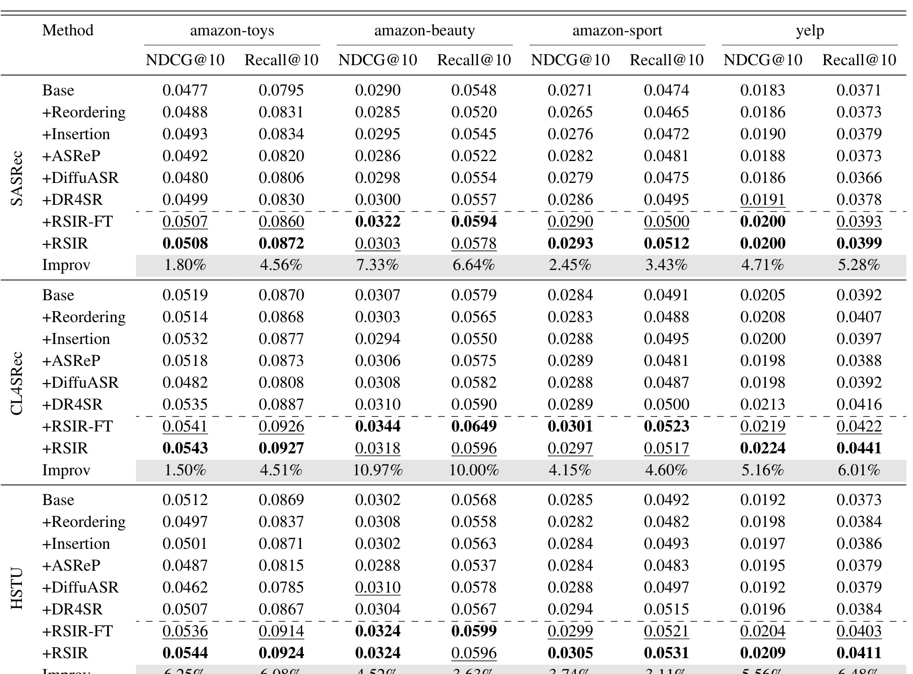
Table 1 给出了最核心结果。先看 SASRec：在 Amazon-Toys 上，Base 的 NDCG@10/Recall@10 是 0.0477/0.0795，RSIR 达到 0.0508/0.0872；在 Amazon-Sport 上，Base 是 0.0271/0.0474，RSIR 达到 0.0293/0.0512。再看 CL4SRec：Beauty 上 RSIR-FT 的 NDCG@10 从最佳 baseline 附近拉到 0.0344，Recall@10 到 0.0649，对应 Improv 10.97% 和 10.00%；Yelp 上 RSIR 达到 0.0224/0.0441。HSTU 是更强 backbone，但 RSIR 仍然有效：Amazon-Toys 上 NDCG@10/Recall@10 达到 0.0544/0.0924，Yelp 上达到 0.0209/0.0411。这个表的重点不是某一个数，而是三种模型、四个数据集、两个训练范式都出现一致正收益。
这里有两个读法。第一，RSIR 不是只对弱模型补短板。HSTU 已经比 SASRec 更强，但生成数据仍能帮助它，说明被密化的局部偏好轨迹并非只弥补模型容量不足。第二，RSIR-FT 和从头 retrain 的 RSIR 都有效，说明收益不是简单“多训练几轮”或“继续 fine-tune”。如果只是继续训练，retrain from scratch 不应该稳定受益；如果只是数据量增加，Insertion 和 Reordering 也应该同样有效。结果显示，带 fidelity 的模型引导生成比普通扰动更有信息。
3.2 多轮递归：收益会累计，也会饱和
递归框架最重要的承诺，是一代模型生成的数据能训练出更强下一代，下一代又生成更好数据。这一点用单轮表格无法证明，所以论文画了多轮曲线。
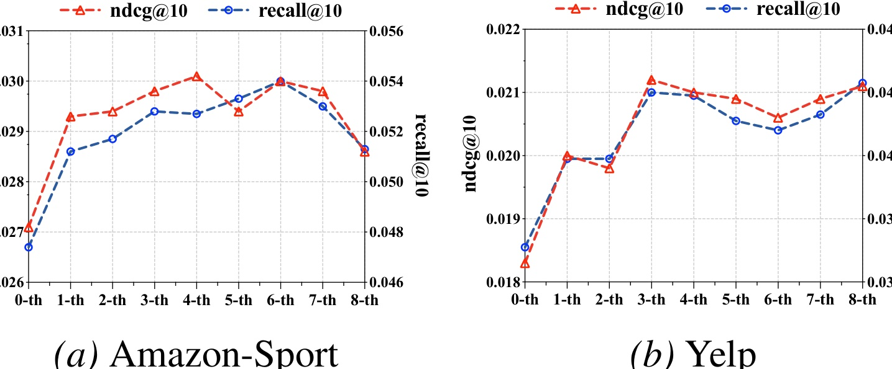
Figure 3 展示 Amazon-Sport 和 Yelp 上 NDCG@10、Recall@10 随递归轮数变化的趋势。Amazon-Sport 上，指标从 0-th 到 3-th 基本持续上升，论文正文提到 HSTU 在 Sports 上初始 Recall@10 提升 8.02%，三轮后扩展到 13.92%。Yelp 上曲线也总体上行，但存在波动。这个现象和理论部分一致：前几轮有效合成数据带来 contraction，模型学到更平滑、更密的偏好区域；到后期，系统性偏差和 fidelity leakage 的噪声地板开始抵消边际收益，因此曲线不会无限上升。
这张图还提示，递归轮次最好被当成模型选择问题，而不是固定流程参数。若只看第一轮，可能低估 RSIR 的“更强模型生成更好数据”的闭环收益；若无上限地继续迭代，又会在后期把剩余噪声放大。比较稳妥的读法是：RSIR 能把一部分原本过稀的用户轨迹补到更可学习的邻域，但它不是永动机，验证集曲线、生成数据通过率和平均生成长度必须共同决定何时停止。
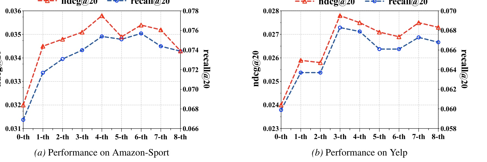
Figure 6 是附录里 @20 指标下的长轮次曲线，补充了 Figure 3 的结论。Amazon-Sport 的 NDCG@20 和 Recall@20 在 0-th 到 4-th/6-th 之间有明显提升，随后有轻微回落；Yelp 的 NDCG@20 在 3-th 附近跃升，然后在 5-th 到 8-th 之间波动。这个图提醒我们，RSIR 的正确使用方式不是“递归越多越好”。更合理的训练策略应该把递归轮数当成 early-stopping 对象，监控验证集、生成数据通过率、平均生成长度、重复率和 ApEn，而不是机械跑满 $K$ 轮。对真实平台来说，三到四轮内拿到大部分收益，通常比追求无限自举更稳。
从实验设计看，Figure 6 也补足了只看 @10 指标的不足。@20 更接近候选扩展和召回池质量，尤其适合判断自生成数据是否只是把少数高置信 item 排得更靠前，还是确实扩大了有效候选覆盖。Amazon-Sport 的 Recall@20 在多轮中持续高于 0-th，说明 RSIR 对候选集合有密化作用；Yelp 的波动则说明不同数据集的最优递归轮数不同，不能把一个统一 $K$ 直接迁移到所有业务。
3.3 Fidelity control 和有界探索：太严、太松、无控制都会出问题
论文在消融里直接移除 fidelity-based quality control，让所有生成 item 都被接受。结果非常清楚：第一轮可能有一点边际收益，但第二轮、第三轮迅速坍塌。
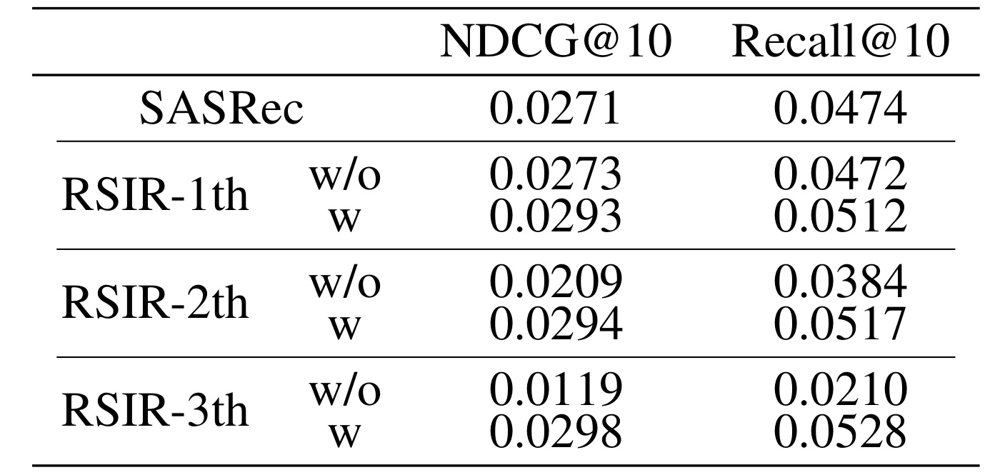
Table 2 用 SASRec 在 Amazon-Sport 上展示这个结论。Base NDCG@10/Recall@10 为 0.0271/0.0474；第一轮不带 fidelity control 的 RSIR-1th w/o 为 0.0273/0.0472，几乎没有提升，带控制的版本达到 0.0293/0.0512。到第二轮，无控制版本降到 0.0209/0.0384；第三轮更低到 0.0119/0.0210，已经明显污染训练集。带控制版本则在 1-th、2-th、3-th 维持 0.0293-0.0298 的 NDCG@10 和 0.0512-0.0528 的 Recall@10。这个表证明，RSIR 的核心不是 recursive，而是 recursive with fidelity control；没有过滤，递归只是把模型错误更快写进数据。
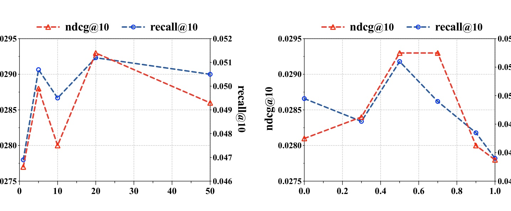
Figure 2 进一步说明，即使有 fidelity control，阈值也要合适。左图是 $\tau$ 的敏感性：阈值过小，质量门太窄，生成序列缺少多样性；阈值过大，低保真样本进入训练集，性能下降。右图是 exploitation probability $p$：$p=0$ 纯探索会让候选太散，$p=1$ 纯利用又缺少新模式，$p\approx0.5$ 附近效果更好。这个图的工程意义很强：RSIR 的超参不是普通调分数的旋钮，而是在控制“有效多样性”。调参时应同步看生成通过率、平均 $L_e$、重复率、真实目标 rank 分布和验证集收益，单看最终 NDCG 很容易误判。
更具体地说，$\tau$ 和 $p$ 分别控制两种失败模式。$\tau$ 太松时，模型会把无法解释真实后续 item 的合成上下文也放进训练集，递归噪声逐轮积累；$p$ 太低时，候选池来自全局物品过多，fidelity gate 虽能过滤一部分错误，但生成效率会下降；$p$ 太高时，模型只在旧历史中重排，数据密化变成低新颖性的局部复制。因此这张图应和 Table 2 一起读：先保证不坍塌，再寻找足够多样的高保真样本。
3.4 弱到强迁移和生成数据质量：不是只增加数据量
论文还验证了一个很实用的问题：强模型生成的数据是否一定更好？弱模型生成的数据能否训练强模型？这关系到成本。如果必须用最大模型做生成器，RSIR 的离线成本会很高；如果弱模型也能提供有用 curriculum，就可以用轻量模型离线批量生成，再训练生产模型。
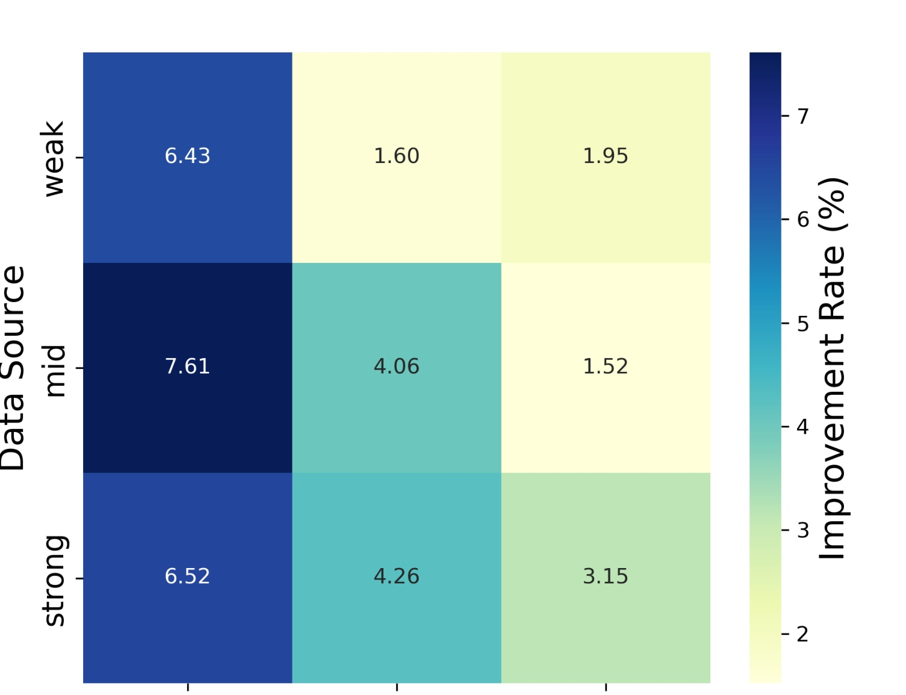
Figure 4 是弱、中、强 teacher 和弱、中、强 target model 的 heatmap。总体趋势是同一学生下，teacher 越强，提升率通常越高；例如 weak target 在 mid teacher 下达到 7.61%，strong teacher 下也有 6.52%。但更有意思的是，weak teacher 对 strong target 仍有 1.95% 的提升，mid teacher 对 strong target 也有 1.52%。这说明 RSIR 的收益不完全来自 teacher capacity，而来自被 fidelity control 筛过的递归正则过程。弱模型虽然预测能力有限，但只要它生成的是偏好流形附近的有效扰动，也能为强模型提供可学习的局部轨迹。
如果只是生成更多序列，结果未必可靠。论文因此分析生成数据本身：一方面看数据密度，另一方面看 Approximate Entropy，即序列复杂度和信息密度。
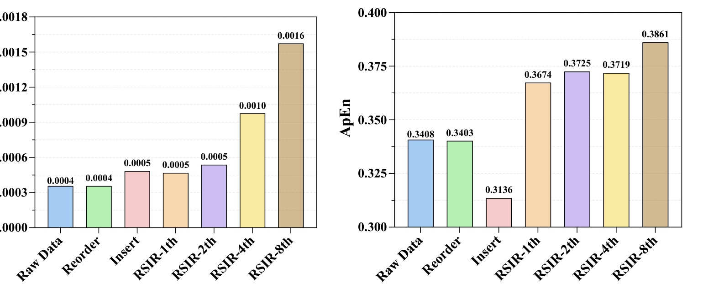
Figure 5 左图显示，RSIR 随递归轮数提升训练数据 density，8-th 时达到明显高于 raw data 和 reorder/insertion 的水平；右图显示 ApEn 也随 RSIR 轮数上升。对比很关键：Insertion 也会让数据密度增加，但它的 ApEn 下降到 0.3136，说明简单插入可能让序列更机械、更无信息。RSIR 则在增加数量的同时提高信息密度，说明它不是把噪声塞进训练集，而是在真实偏好邻域内补充更丰富的组合模式。这是论文支撑“data-driven implicit regularization”的数据侧证据。
这张图也是我判断 RSIR 不是普通数据扩容的主要依据。推荐系统中最常见的假象是数据量增加后 Recall 改善，但 Precision、MRR 或长期满意度下降，因为新增样本只扩大了候选覆盖，却没有增加可泛化的信息。ApEn 不是完美指标，但它至少从序列复杂度角度补了一刀：如果合成序列只是机械重复，信息密度不会上升。RSIR 在 density 和 ApEn 上同时上升，才与前面 Table 1 的 Precision/F1/MRR 附录结果形成互相支撑。
3.5 效率和鲁棒性：递归自生成能不能放进真实训练流水线
RSIR 引入了生成阶段和 fidelity check，工程上最直接的问题是成本。论文在 Amazon-Toys 上做了运行时间对比。
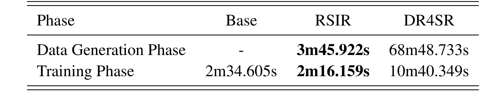
Table 3 显示，RSIR 的 data generation phase 为 3m45.922s，而 DR4SR 是 68m48.733s；training phase 中，Base 为 2m34.605s，RSIR 反而是 2m16.159s，DR4SR 为 10m40.349s。附录 Table 13 还给出 ASReP 的 20m13.968s 生成时间和 3m44.264s 训练时间。这个结果说明两个点：第一，使用 backbone 自身生成，比训练或调用复杂外部生成器便宜得多；第二，合成数据并没有让训练阶段不可控变慢，论文认为这与更平滑的优化景观有关。实际业务中仍要重新测，因为公开数据规模远小于工业候选库，但“生成可以离线、fidelity check 可用 ANN/cluster 加速”让这个方向具备工程可行性。
最后是噪声鲁棒性。真实交互日志会有误点、误曝光和无关点击；如果 RSIR 只是放大已有日志，它可能在噪声条件下更差。论文通过向用户序列注入随机 item，噪声比例 $\eta$ 从 0 到 0.8，比较 Base 与 RSIR。
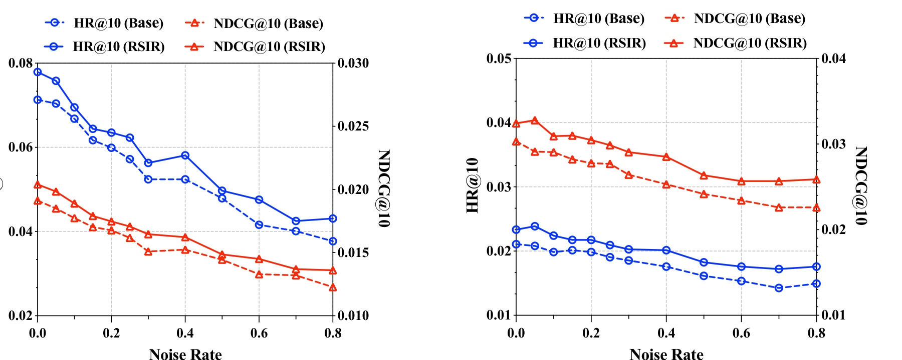
Figure 7 中，随着噪声比例增加，Base 和 RSIR 的绝对 HR@10/NDCG@10 都下降，这符合预期。但 RSIR 曲线始终位于 Base 之上，且在高噪声区没有出现递归崩溃。论文的解释是：随机噪声通常是 off-manifold perturbation，fidelity control 在生成阶段会过滤掉这些低概率、无法继续解释真实剩余目标的交互，因此 RSIR 起到 denoising filter 的作用。这个结论对业务很有吸引力，因为线上日志从来不干净；如果合成机制能把有效轨迹密化，同时不强化随机噪声，它就可以作为训练前的数据稳健化步骤。
需要强调的是，这里的鲁棒性不是说 RSIR 能修复所有日志问题，而是说在随机插入噪声这种受控压力测试下，它没有把噪声递归放大。图中两组数据的曲线都随噪声上升而下降，说明模型仍然受污染影响；RSIR 的优势在于下降曲线整体更高。对线上系统，这意味着还需要额外检查系统性噪声，例如价格变化、库存状态、曝光策略和促销活动带来的偏差，不能只用随机噪声实验替代真实日志审计。
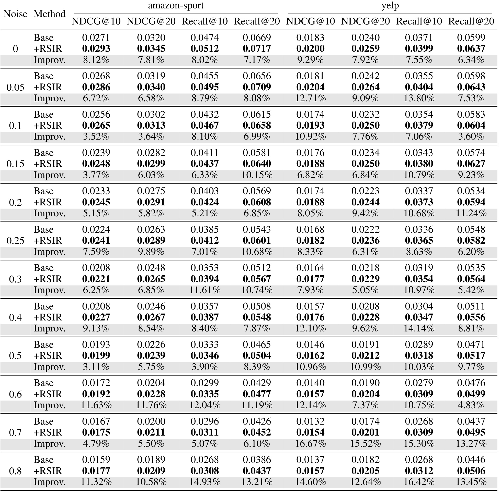
Table 14 给出完整数值。$\eta=0$ 时，Amazon-Sport 的 Recall@10 从 Base 0.0474 到 RSIR 0.0512，提升 8.02%；Yelp 的 Recall@10 从 0.0371 到 0.0399，提升 7.55%。当 $\eta=0.8$ 时，Amazon-Sport 的 Recall@10 从 0.0268 到 0.0308，提升 14.93%；Yelp 的 Recall@10 从 0.0268 到 0.0312，提升 16.42%。也就是说，噪声越高，RSIR 的相对收益反而越明显。需要保守的是，这里注入的是随机噪声，不一定覆盖真实平台中的系统性偏差、热门曝光偏置或攻击样本；但它至少证明 RSIR 不会在简单随机污染下自毁。
整体实验链条比较完整：Table 1 证明单轮、跨 backbone、跨 dataset 有效；Figure 3 和 Figure 6 证明递归收益会累计但需要停止；Table 2 和 Figure 2 证明 fidelity control 和有界探索是必要条件；Figure 4 说明弱模型也能提供有效合成 curriculum；Figure 5 说明数据质量而不只是数据量提升；Table 3 说明运行成本可控；Figure 7 和 Table 14 说明噪声下仍有稳健性。论文的不足是所有主实验仍在公开 benchmark 上，没有大规模线上 A/B；因此工程采用时，必须重新验证真实候选库规模、延迟、业务指标和反馈闭环风险。
4. 总结
4.1 我的判断
RSIR 的核心价值不是“推荐模型可以随便生成自己的训练数据”，而是给这个危险想法加了一套可解释的保真门控。它抓住了推荐系统和 LLM 自我改进的差别：推荐系统的用户行为是稀疏、偏置、强反馈闭环数据，错误合成样本会很快污染后继训练。因此论文把自我生成限定在用户偏好流形附近，用真实剩余交互的排名作为可操作的校验信号。这一点比最终提升几个百分点更重要。
我更愿意把 RSIR 看成一种“数据侧正则化框架”，而不是一种新推荐模型。它不改变 SASRec、CL4SRec、HSTU 的主干结构，也不要求外部 LLM，而是在训练数据周围生成受控邻域，迫使模型在真实偏好轨迹附近平滑。理论里的 $\Omega(\theta)\propto\|\nabla_M f_\theta\|^2$ 虽然依赖流形假设和一阶近似，但和实验里的多轮饱和、fidelity ablation、噪声鲁棒性是对得上的。
4.2 工程启发与复现建议
第一，复现前应先做数据诊断：用户序列平均长度、item 稀疏度、热门 item 占比、随机噪声水平、验证集 next-item rank 分布。RSIR 依赖“真实剩余目标可作为 fidelity anchor”这一前提；如果业务序列极短、目标噪声很高或 leave-one-out 目标不稳定，$\tau$ 检查可能失效。
第二，先离线实现最小闭环。固定一个 backbone，生成少量 trial，记录每一步候选来源、生成 item、真实剩余目标 rank、是否 break、最终序列长度、重复率和通过率。不要一开始就追主表结果；先确认 fidelity gate 是否真的过滤了离谱样本，$\tau$ 和 $p$ 是否能改变生成数据分布。
第三，训练时一定要做多轮 early stopping。论文已经显示收益会 plateau，后期可能因噪声地板回落。实际流水线可以把递归轮数纳入验证集选择，并设定硬阈值：如果生成通过率异常升高但验证收益下降，说明 $\tau$ 太松；如果通过率过低且数据密度不变，说明 $\tau$ 太严或候选池太窄。
第四，大规模部署要优先优化 fidelity check。朴素检查需要在全 item set 上得到真实剩余目标 rank，工业候选库下成本高。可以按论文建议用 ANN/MIPS、聚类候选子集、热门/长尾分层索引或已有召回通道近似 top-$\tau$。但近似检索本身也会引入漏判和误判，需要把 approximate fidelity check 与精确小样本审计并行跑。
4.3 局限与后续跟进
这篇论文仍有几个风险。第一，fidelity control 用真实剩余 item 做锚，但真实日志本身可能受曝光、位置、库存和价格影响，不完全代表用户偏好流形。第二，公开 benchmark 的规模和反馈复杂度有限，不能直接说明 RSIR 在亿级 item、强业务策略和多目标排序系统中稳定。第三，理论分析依赖流形假设、有效收缩率和 bounded loss，更多是解释性框架，不是严格生产保证。第四，随机噪声鲁棒性不等于对系统性偏差、刷量攻击或热门反馈回路鲁棒。
后续我会重点跟进三件事：一是作者代码中 fidelity check 的具体实现，尤其是 rank 计算、candidate pool 采样和 break 逻辑；二是 RSIR 与 semantic ID、内容塔、LLM4Rec 表示增强的组合方式，因为 appendix 已显示二者可以叠加；三是在真实业务中如何设计离线-影子-小流量验证指标，例如生成通过率、序列多样性、长尾覆盖、冷启动召回、线上 CTR/CVR 以及负反馈率。总的来说，RSIR 是一篇值得推荐系统工程团队精读的自生成数据论文，它最可迁移的不是某个 backbone 分数，而是“自我生成必须带真实目标保真约束”的闭环思想。